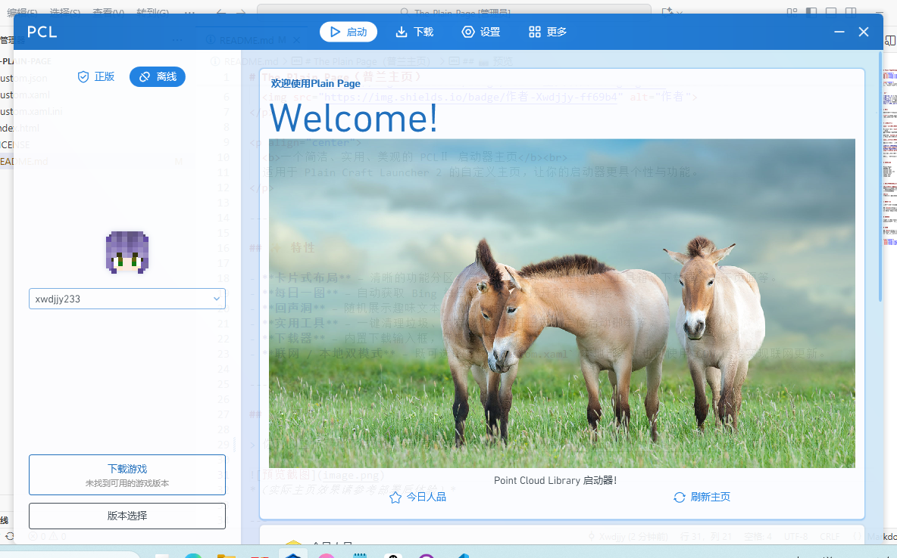
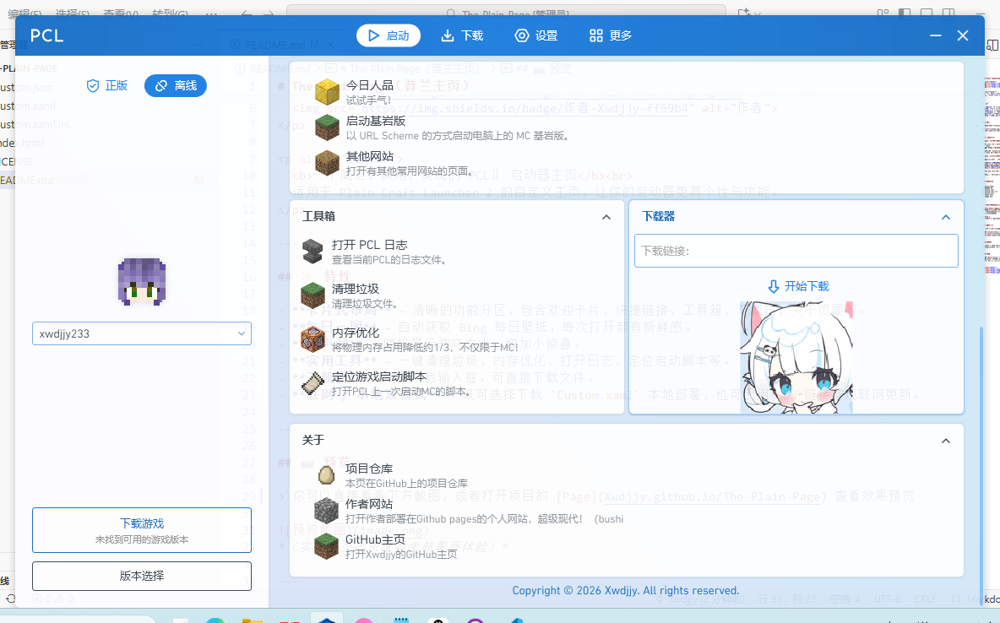

The Plain Page（普兰主页）
一个简洁、实用、美观的 PCLⅡ 启动器主页
适用于 Plain Craft Launcher 2 的自定义主页，让你的启动器更具个性与功能。
✨ 特性
- 卡片式布局 – 清晰的功能分区，包含欢迎卡片、快捷链接、工具箱、下载器、关于页面等。
- 每日一图 – 自动获取 Bing 每日壁纸，每次打开都有新鲜感。
- 回声洞 – 随机展示趣味文本，增加小惊喜。
- 实用工具 – 一键清理垃圾、内存优化、打开日志、定位启动脚本等。
- 下载器 – 内置下载输入框，可直接下载文件。
- 联网 / 本地双模式 – 既可选择下载
Custom.xaml本地部署，也可使用 CDN 链接实现联网更新。
📸 预览
你可以直接看看下方截图，或者打开项目的 Page 查看效果预览(你现在就在这里啦~）


（实际主页效果请参考部署后体验）
📦 部署与食用
方法一：本地部署（下载 Custom.xaml）
- 点击仓库中的
Custom.xaml文件，然后点击“下载”按钮，或直接执行以下命令：wget https://github.com/Xwdjjy/The-Plain-Page/raw/main/Custom.xaml - 将下载的
Custom.xaml文件放入 PCLⅡ 同级目录下的\PCL文件夹内。 - 在 PCLⅡ 的“设置”→“个性化”→“主页”中选择“读取本地文件”即可生效。
方法二：联网部署（使用 CDN 链接）
如果你希望每次打开主页都自动获取最新版本（无需手动更新），可以使用以下链接：
- jsDelivr CDN（推荐）
https://cdn.jsdelivr.net/gh/Xwdjjy/The-Plain-Page/Custom.xaml - GitHub Pages（可能不稳定）
https://xwdjjy.github.io/The-Plain-Page/Custom.xaml
在 PCLⅡ 的“主页”设置中选择“联网更新”，粘贴上述链接即可。
注意：第一次联网模式加载需要 PCLⅡ 保持网络连接。
📁 文件结构
The-Plain-Page/
├── README.md # 你现在看到的说明文档
├── Custom.xaml # 主页面文件（核心）
├── Custom.xaml.ini # 数据库版本信息（供PCL识别）
├── Custom.json # 主题与版本元数据
├── index.html # 项目展示页面（含下载引导）
└── image.png # 版本说明图片📜 版本历史（还未完成）
v0.0.2（当前最新）
- 测试版本，完善了卡片布局与交互
- 增加了工具箱、下载器等实用模块
- 修复部分已知问题
v0.0.1
- 初始版本，基础结构搭建
🤝 如何贡献
欢迎任何形式的贡献！你可以：
- 提交 Issue 报告 Bug 或提出新功能建议
- Fork 本仓库，修改后提交 Pull Request
- 点个 ⭐Star 支持作者！
📄 许可证
Copyright © 2026 Xwdjjy. All rights reserved.
本项目仅供个人学习与使用，未经许可不得用于商业用途。
🙏 致谢
- 感谢 PCLⅡ 提供的自定义主页支持
- 感谢 Bing 每日壁纸 API
- 以及所有使用和关注本项目的朋友！